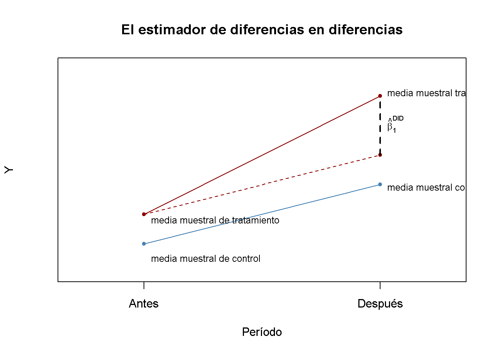
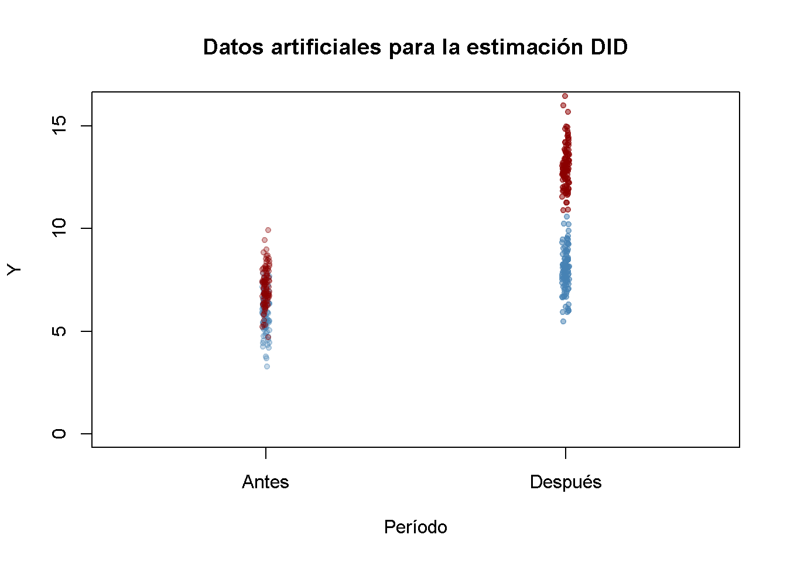
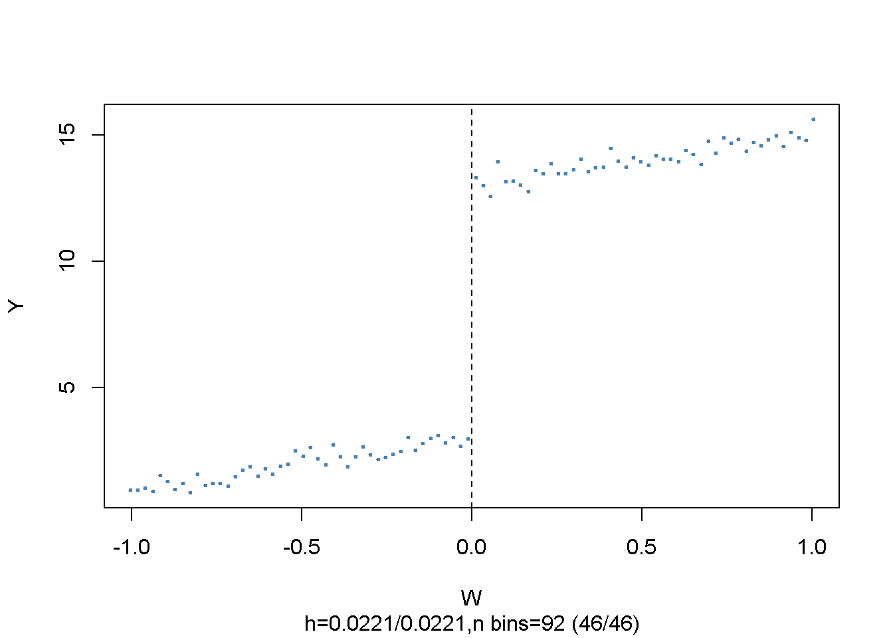
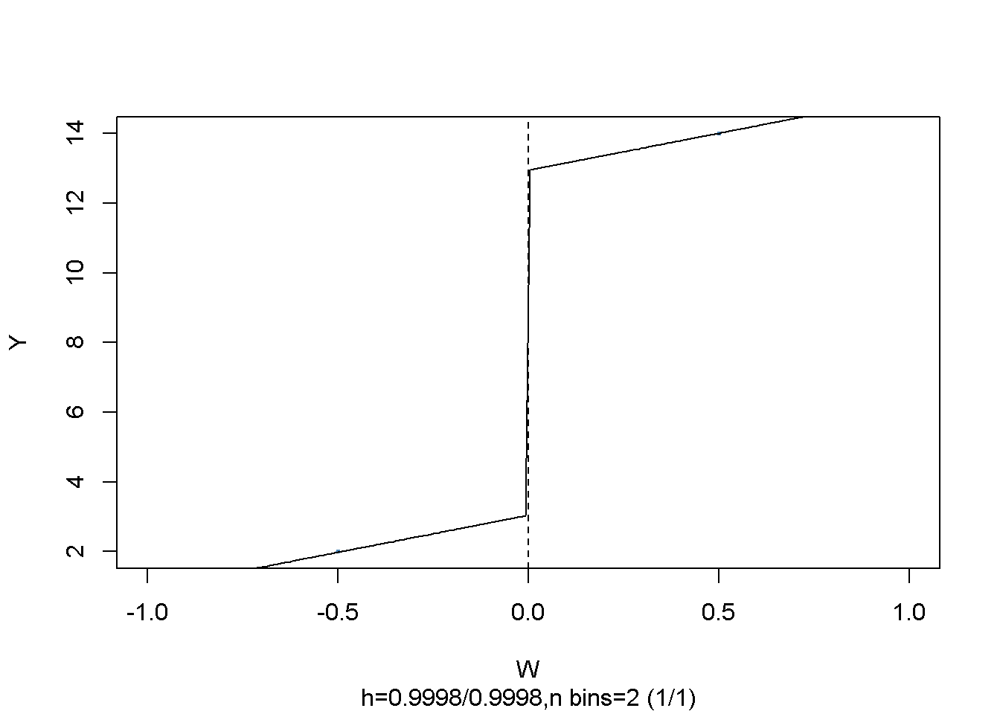
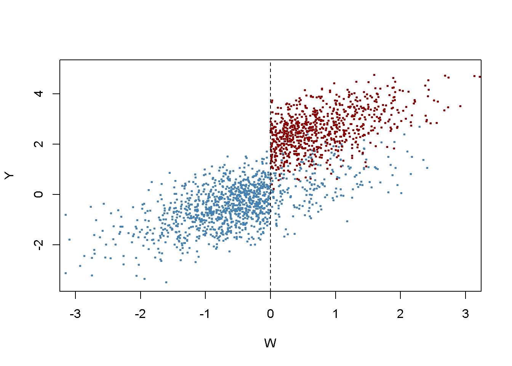
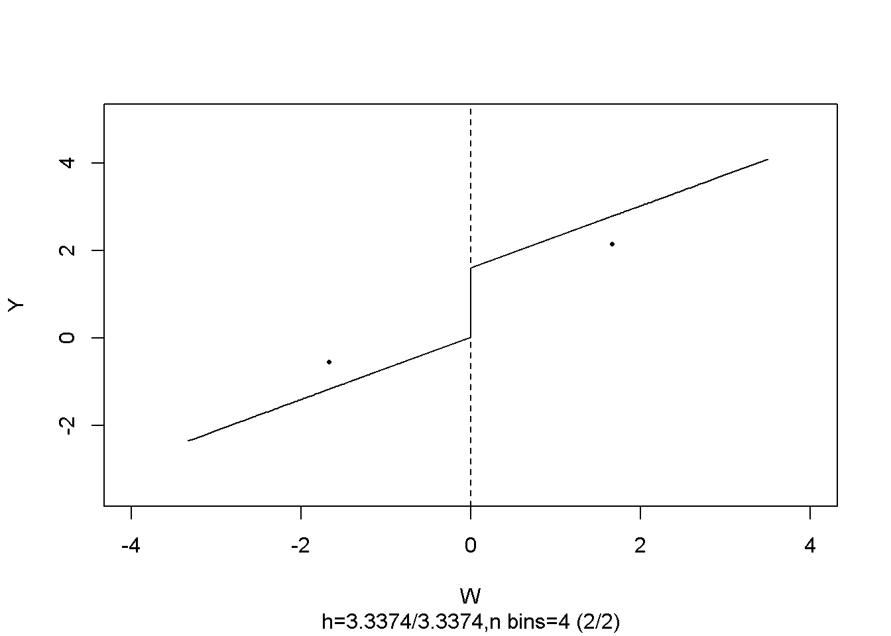

14.4 Cuasi experimentos
En los cuasiexperimentos, se explota “como si” la aleatoriedad para utilizar métodos similares a los que se han analizado en el capítulo anterior. Existen dos tipos de cuasiexperimentos:
Las variaciones aleatorias en circunstancias individuales permiten ver el tratamiento “como si” se hubiera determinado al azar.
El tratamiento está determinado sólo parcialmente por una variación aleatoria “como si.”
El primero permite estimar el efecto usando cualquier modelo (14.2); es decir, el estimador de diferencias con regresores adicionales, o, si hay duda de que la aleatoriedad “como si” no asegura completamente que haya sin diferencias sistemáticas entre el grupo de control y el grupo de tratamiento, utilizando el estimador diferencias en diferencias (DED). En el último caso, se puede aplicar un enfoque IV para la estimación de un modelo como (14.2) que utiliza la fuente de aleatoriedad “como si” en la asignación de tratamientos como instrumento.
Algunas técnicas más avanzadas que son útiles en entornos donde la asignación de tratamiento está (parcialmente) determinada por un umbral en una de las llamadas variables de ejecución son diseño de discontinuidad de regresión aguda (DDRA) y diseño de discontinuidad de regresión difusa (DDRD).
Se revisa brevemente estas técnicas y se usarán datos simulados en un ejemplo mínimo para discutir cómo se pueden aplicar DED, DDRA y DDRD en R.
El Estimador de diferencias en diferencias
En los cuasiexperimentos, la fuente de aleatoriedad “como si” en la asignación de tratamientos a menudo no puede evitar por completo las diferencias sistemáticas entre los grupos de control y de tratamiento. Este problema fue encontrado por Card and Krueger (1994), que usa la geografía como la asignación de tratamiento aleatorio “como si” para estudiar el efecto en el empleo en restaurantes de comida rápida causado por un aumento en el salario mínimo estatal en Nueva Jersey en el año de 1992. Su idea era utilizar el hecho de que el aumento del salario mínimo se aplicaba a los empleados de Nueva Jersey (grupo de tratamiento), pero no a los que vivían en la vecina Pensilvania (grupo de control).
Es bastante concebible que tal aumento salarial no esté correlacionado con otros determinantes del empleo. Sin embargo, todavía puede haber algunas diferencias específicas de cada estado y, por lo tanto, diferencias entre el grupo de control y el grupo de tratamiento. Esto haría que el estimador de diferencias fuese sesgado e inconsistente. Card and Krueger (1994) resolvió esto utilizando un estimador DED: Recopilaron datos en febrero de 1992 (antes del tratamiento) y noviembre de 1992 (después del tratamiento) para los mismos restaurantes y estimaron el efecto del aumento salarial analizando las diferencias en las diferencias en el empleo para Nueva Jersey y Pensilvania antes y después del aumento.1 El estimador DED es:
\[\begin{align} \widehat{\beta}_1^{\text{diffs-in-diffs}} =& \, (\overline{Y}^{\text{treatment,after}} - \overline{Y}^{\text{treatment,before}}) - (\overline{Y}^{\text{control,after}} - \overline{Y}^{\text{control,before}}) \\ =& \Delta \overline{Y}^{\text{treatment}} - \Delta \overline{Y}^{\text{control}} \tag{14.8} \end{align}\]
con
\(\overline{Y}^{\text{tratamiento, antes}}\) - la media muestral en el grupo de tratamiento antes del tratamiento.
\(\overline{Y}^{\text{tratamiento, después}}\) - la media muestral en el grupo de tratamiento después del tratamiento.
\(\overline{Y}^{\text{tratamiento, antes}}\) - la media muestral en el grupo de control antes del tratamiento.
\(\overline{Y}^{\text{tratamiento, después}}\) - la media muestral en el grupo de control después del tratamiento.
Ahora se usa R para crear una gráfica de vital importancia.
# inicializar la gráfica y agregar un grupo de control
plot(c(0, 1), c(6, 8),
type = "p",
ylim = c(5, 12),
xlim = c(-0.3, 1.3),
main = "El estimador de diferencias en diferencias",
xlab = "Período",
ylab = "Y",# agregar anotaciones
col = "steelblue",
pch = 20,
xaxt = "n",
yaxt = "n")
axis(1, at = c(0, 1), labels = c("Antes", "Después"))
axis(2, at = c(0, 13))
# agregar grupo de tratamiento
points(c(0, 1, 1), c(7
, 9, 11),
col = "darkred",
pch = 20)
# agregar segmentos de línea
lines(c(0, 1), c(7, 11), col = "darkred")
lines(c(0, 1), c(6, 8), col = "steelblue")
lines(c(0, 1), c(7, 9), col = "darkred", lty = 2)
lines(c(1, 1), c(9, 11), col = "black", lty = 2, lwd = 2)
# agregar anotaciones
text(1, 10, expression(hat(beta)[1]^{DID}), cex = 0.8, pos = 4)
text(0, 5.5, "media muestral de control", cex = 0.8 , pos = 4)
text(0, 6.8, "media muestral de tratamiento", cex = 0.8 , pos = 4)
text(1, 7.9, "media muestral control", cex = 0.8 , pos = 4)
text(1, 11.1, "media muestral tratamiento", cex = 0.8 , pos = 4)
El estimador DID (14.8) también se puede escribir en notación de regresión: \(\widehat{\beta}_1^{\text{DID}}\) es el estimador MCO de \(\beta_1\) en
\[\begin{align} \Delta Y_i = \beta_0 + \beta_1 X_i + u_i, \tag{14.9} \end{align}\]
donde \(\Delta Y_i\) denota la diferencia en los resultados previos y posteriores al tratamiento del individuo \(i\), mientras que \(X_i\) es el indicador de tratamiento.
Añadiendo regresores adicionales que miden las características previas al tratamiento a (14.9) se obtiene:
\[\begin{align} \Delta Y_i = \beta_0 + \beta_1 X_i + \beta_2 W_{1i} + \dots + \beta_{1+r} W_{ri} + u_i, \tag{14.10} \end{align}\]
el estimador de diferencias en diferencias con regresores adicionales. Los regresores adicionales pueden llevar a una estimación más precisa de \(\beta_1\).
Se mantienen las cosas simples y se enfoca en la estimación del efecto del tratamiento usando DID en el caso más simple; es decir, un grupo de control y un grupo de tratamiento observados durante dos períodos de tiempo, uno antes y otro después del tratamiento. En particular, se verá que existen tres formas diferentes de proceder.
Primero, se simulan los datos previos y posteriores al tratamiento utilizando R.
# establecer tamaño de muestra
n <- 200
# definir el efecto del tratamiento
TEffect <- 4
# generar ficticias de tratamiento
TDummy <- c(rep(0, n/2), rep(1, n/2))
# simular valores previos y posteriores al tratamiento de la variable dependiente
y_pre <- 7 + rnorm(n)
y_pre[1:n/2] <- y_pre[1:n/2] - 1
y_post <- 7 + 2 + TEffect * TDummy + rnorm(n)
y_post[1:n/2] <- y_post[1:n/2] - 1 A continuación, se grafican los datos. La función jitter() se usa para agregar algo de dispersión artificial en el componente horizontal de los puntos para que haya menos sobretrazado. La función alpha() del paquete scales permite ajustar la opacidad de los colores utilizados en los gráficos.
library(scales)
pre <- rep(0, length(y_pre[TDummy==0]))
post <- rep(1, length(y_pre[TDummy==0]))
# graficar grupo de control en t = 1
plot(jitter(pre, 0.6),
y_pre[TDummy == 0],
ylim = c(0, 16),
col = alpha("steelblue", 0.3),
pch = 20,
xlim = c(-0.5, 1.5),
ylab = "Y",
xlab = "Período",
xaxt = "n",
main = "Datos artificiales para la estimación DID")
axis(1, at = c(0, 1), labels = c("Antes", "Después"))
# agregar grupo de tratamiento en t = 1
points(jitter(pre, 0.6),
y_pre[TDummy == 1],
col = alpha("darkred", 0.3),
pch = 20)
# agregar grupo de control en t = 2
points(jitter(post, 0.6),
y_post[TDummy == 0],
col = alpha("steelblue", 0.5),
pch = 20)
# agregar grupo de tratamiento en t = 2
points(jitter(post, 0.6),
y_post[TDummy == 1],
col = alpha("darkred", 0.5),
pch = 20)
Las observaciones del grupo de control y de tratamiento tienen una media más alta después del tratamiento, pero el aumento es más fuerte para el grupo de tratamiento. Usando DID se puede estimar qué parte de esa diferencia se debe al tratamiento.
Es sencillo calcular la estimación DID en la forma de (14.8).
# calcular el estimador DID para el efecto del tratamiento 'a mano'
mean(y_post[TDummy == 1]) - mean(y_pre[TDummy == 1]) -
(mean(y_post[TDummy == 0]) - mean(y_pre[TDummy == 0]))
#> [1] 3.903542Se debe tener en cuenta que la estimación es cercana a \(4\), el valor elegido como el efecto del tratamiento TEffect arriba. Dado que (14.9) es un modelo lineal simple, se puede realizar una estimación MCO de esta especificación de regresión usando lm().
# calcular el estimador DID usando un modelo lineal
lm(I(y_post - y_pre) ~ TDummy)
#>
#> Call:
#> lm(formula = I(y_post - y_pre) ~ TDummy)
#>
#> Coefficients:
#> (Intercept) TDummy
#> 1.981 3.904Se encontró que las estimaciones coinciden. Además, se puede demostrar que la estimación DID obtenida al estimar la especificación (14.9) MCO es la misma que la estimación MCO de \(\beta_{TE}\) en:
\[\begin{align} Y_i =& \beta_0 + \beta_1 D_i + \beta_2 Period_i + \beta_{TE} (Period_i \times D_i) + \varepsilon_i \tag{14.11} \end{align}\]
donde \(D_i\) es el indicador de tratamiento binario, \(Period_i\) es un indicador binario para el período de postratamiento y \(Period_i \times D_i\) es la interacción de ambos.
En cuanto a (14.9), la estimación de (14.11) usando R es sencilla. Consulte el Capítulo 9 para ver una discusión de los términos de interacción.
# preparar datos para la regresión DID usando el término de interacción
d <- data.frame("Y" = c(y_pre,y_post),
"Treatment" = TDummy,
"Period" = c(rep("1", n), rep("2", n)))
# estimar el modelo
lm(Y ~ Treatment * Period, data = d)
#>
#> Call:
#> lm(formula = Y ~ Treatment * Period, data = d)
#>
#> Coefficients:
#> (Intercept) Treatment Period2 Treatment:Period2
#> 5.984 1.189 1.981 3.904Como era de esperar, la estimación del coeficiente de interacción de la variable ficticia de tratamiento y la variable temporal coinciden con las estimaciones obtenidas utilizando (14.8) y la estimación MCO de (14.9).
Estimadores de discontinuidad de regresión
Considerar el modelo
\[\begin{align} Y_i =& \beta_0 + \beta_1 X_i + \beta_2 W_i + u_i \tag{14.12} \end{align}\]
y sea
\[\begin{align*} X_i =& \begin{cases} 1, & W_i \geq c \\ 0, & W_i < c \end{cases} \end{align*}\]
de modo que la recepción del tratamiento, \(X_i\), está determinada por algún umbral \(c\) de una variable continua \(W_i\), la denominada variable de ejecución. La idea del diseño de discontinuidad de regresión es usar observaciones con un \(W_i\) cercano a \(c\) para la estimación de \(\beta_1\). \(\beta_1\) es el efecto del tratamiento promedio para individuos con \(W_i = c\), que se supone que es una buena aproximación al efecto del tratamiento en la población. (14.12) se denomina diseño de discontinuidad de regresión aguda porque la asignación de tratamiento es determinista y discontinua en el punto de corte: Todas las observaciones con \(W_i < c\) no reciben tratamiento y todas las observaciones donde \(W_i \geq c\) son tratados.
Los siguientes fragmentos de código muestran cómo estimar un SRDD lineal usando R y cómo producir el gráfico.
# generar algunos datos de muestra
W <- runif(1000, -1, 1)
y <- 3 + 2 * W + 10 * (W>=0) + rnorm(1000)# cargar el paquete 'rddtools'
library(rddtools)
# construir rdd_data
data <- rdd_data(y, W, cutpoint = 0)
# graficar los datos de la muestra
plot(data,
col = "steelblue",
cex = 0.35,
xlab = "W",
ylab = "Y")
El argumento nbins establece el número de contenedores en los que se divide la variable en ejecución para la agregación. Los puntos representan los promedios del contenedor de la variable de resultado.
Se puede usar la función rdd_reg_lm() para estimar el efecto del tratamiento usando el model (14.12) para los datos artificiales generados anteriormente. Al elegir slope = “same”, se restringen las pendientes de la función de regresión estimada para que sean iguales en ambos lados del salto en el punto de corte \(W=0\).
# estimar el modelo de RDD agudo o nítido
rdd_mod <- rdd_reg_lm(rdd_object = data,
slope = "same")
summary(rdd_mod)
#>
#> Call:
#> lm(formula = y ~ ., data = dat_step1, weights = weights)
#>
#> Residuals:
#> Min 1Q Median 3Q Max
#> -3.1176 -0.6595 0.0208 0.6898 3.4224
#>
#> Coefficients:
#> Estimate Std. Error t value Pr(>|t|)
#> (Intercept) 3.0411 0.0696 43.69 <2e-16 ***
#> D 9.9005 0.1245 79.55 <2e-16 ***
#> x 2.1262 0.1092 19.46 <2e-16 ***
#> ---
#> Signif. codes: 0 '***' 0.001 '**' 0.01 '*' 0.05 '.' 0.1 ' ' 1
#>
#> Residual standard error: 0.9945 on 997 degrees of freedom
#> Multiple R-squared: 0.9736, Adjusted R-squared: 0.9735
#> F-statistic: 1.836e+04 on 2 and 997 DF, p-value: < 2.2e-16La estimación del coeficiente de interés se etiqueta D. La estimación está muy cerca del efecto del tratamiento elegido en el DGP anterior.
Es fácil visualizar el resultado: Simplemente llamar a plot() en el objeto del modelo estimado.
# graficar el modelo RDD junto con observaciones agrupadas
plot(rdd_mod,
cex = 0.35,
col = "steelblue",
xlab = "W",
ylab = "Y")
Como arriba, los puntos representan promedios de observaciones agrupadas.
Hasta ahora se asume que el cruce del umbral determina la recepción del tratamiento, de modo que el salto de las funciones de regresión de la población en el umbral puede considerarse como el efecto causal del tratamiento.
Cuando cruzar el umbral \(c\) no es la única causa para recibir el tratamiento, el tratamiento no es una función determinista de \(W_i\). En cambio, es útil pensar en \(c\) como un umbral donde la probabilidad de recibir el salto de tratamiento.
Este salto puede deberse a variables inobservables que repercuten en la probabilidad de ser tratado. Por lo tanto, \(X_i\) en (14.12) se correlacionará con el error \(u_i\) y será más difícil estimar consistentemente el efecto del tratamiento. En este escenario, usar un diseño de discontinuidad de regresión difusa que se base en un enfoque IV puede ser un remedio: Tomar la variable binaria \(Z_i\) como un indicador para cruzar el umbral,
\[\begin{align*} Z_i = \begin{cases} 1, & W_i \geq c \\ 0, & W_i < c. \end{cases} \end{align*}\]
y suponga que \(Z_i\) se relaciona con \(Y_i\) solo a través del indicador de tratamiento \(X_i\). Entonces \(Z_i\) y \(u_i\) no están correlacionados, pero \(Z_i\) influye en la recepción del tratamiento, por lo que está correlacionado con \(X_i\). Por lo tanto, \(Z_i\) es un instrumento válido para \(X_i\) y (14.12) se puede estimar usando TSLS.
El siguiente fragmento de código genera datos de muestra donde las observaciones con un valor de la variable en ejecución \(W_i\) por debajo del límite \(c = 0\) no reciben tratamiento y las observaciones con \(W_i \geq 0\) sí reciben tratamiento con una probabilidad de \(80\%\) de modo que el estado del tratamiento solo esté determinado parcialmente por la variable en ejecución y el corte. El tratamiento conduce a un aumento de \(Y\) en \(2\) unidades. Las observaciones con \(W_i \geq 0\) que no reciben tratamiento se denominan no-shows: Piense en una persona que fue asignada para recibir el tratamiento pero de alguna manera logra evitarlo.
library(MASS)
# generar datos de muestra
mu <- c(0, 0)
sigma <- matrix(c(1, 0.7, 0.7, 1), ncol = 2)
set.seed(1234)
d <- as.data.frame(mvrnorm(2000, mu, sigma))
colnames(d) <- c("W", "Y")
# introducir borrosidad
d$treatProb <- ifelse(d$W < 0, 0, 0.8)
fuzz <- sapply(X = d$treatProb, FUN = function(x) rbinom(1, 1, prob = x))
# efecto de tratamiento
d$Y <- d$Y + fuzz * 2sapply() aplica la función proporcionada a FUN a cada elemento del argumento X. Aquí, d$treatProb es un vector y el resultado también es un vector.
Se grafican todas las observaciones, usando el color azul para marcar a los individuos que no recibieron el tratamiento y el color rojo para los que recibieron el tratamiento.
# generar una gráfica coloreada del grupo de tratamiento y control
plot(d$W, d$Y,
col = c("steelblue", "darkred")[factor(fuzz)],
pch= 20,
cex = 0.5,
xlim = c(-3, 3),
ylim = c(-3.5, 5),
xlab = "W",
ylab = "Y")
# agregar una línea vertical discontinua en el corte
abline(v = 0, lty = 2)
Obviamente, la recepción de tratamiento ya no es una función determinista de la variable de ejecución \(W\). Algunas observaciones con \(W\geq0\) no recibieron el tratamiento. Se puede estimar un FRDD estableciendo adicionalmente treatProb como la variable de asignación z en rdd_data(). Luego, rdd_reg_lm() aplica el siguiente procedimiento TSLS: El tratamiento se predice usando \(W_i\) y la variable ficticia de corte \(Z_i\), la variable instrumental, en la regresión de la primera etapa. Los valores ajustados de la regresión de la primera etapa se utilizan para obtener una estimación coherente del efecto del tratamiento utilizando la segunda etapa en la que el resultado \(Y\) se retrocede sobre los valores ajustados y la variable corriente \(W\).
# estimar la Fuzzy RDD
data <- rdd_data(d$Y, d$W,
cutpoint = 0,
z = d$treatProb)
frdd_mod <- rdd_reg_lm(rdd_object = data,
slope = "same")
frdd_mod
#> ### RDD regression: parametric ###
#> Polynomial order: 1
#> Slopes: same
#> Number of obs: 2000 (left: 999, right: 1001)
#>
#> Coefficient:
#> Estimate Std. Error t value Pr(>|t|)
#> D 1.981297 0.084696 23.393 < 2.2e-16 ***
#> ---
#> Signif. codes: 0 '***' 0.001 '**' 0.01 '*' 0.05 '.' 0.1 ' ' 1La estimación es cercana a \(2\), el efecto del tratamiento poblacional. Se puede llamar plot() en el objeto del modelo para obtener una figura que consta de datos agrupados y la función de regresión estimada.
# graficar una función FRDD estimada
plot(frdd_mod,
cex = 0.5,
lwd = 0.4,
xlim = c(-4, 4),
ylim = c(-3.5, 5),
xlab = "W",
ylab = "Y")
¿Qué pasa si se usa un SRDD en su lugar, ignorando así el hecho de que el tratamiento no está perfectamente determinado por el límite en \(W\)? Se puede tener una impresión de las consecuencias estimando un SRDD utilizando los datos simulados previamente.
# estimar SRDD
data <- rdd_data(d$Y,
d$W,
cutpoint = 0)
srdd_mod <- rdd_reg_lm(rdd_object = data,
slope = "same")
srdd_mod
#> ### RDD regression: parametric ###
#> Polynomial order: 1
#> Slopes: same
#> Number of obs: 2000 (left: 999, right: 1001)
#>
#> Coefficient:
#> Estimate Std. Error t value Pr(>|t|)
#> D 1.585038 0.067756 23.393 < 2.2e-16 ***
#> ---
#> Signif. codes: 0 '***' 0.001 '**' 0.01 '*' 0.05 '.' 0.1 ' ' 1La estimación obtenida utilizando un SRDD sugiere un sesgo sustancial a la baja. De hecho, este procedimiento es inconsistente para el verdadero efecto causal, por lo que aumentar la muestra no aliviaría el sesgo.
Existen varios problemas potenciales con los cuasiexperimentos. Como ocurre con todos los estudios empíricos, estos problemas potenciales están relacionados con la validez interna y externa. De igual, es necesario discutir las técnicas sobre la estimación del efecto del tratamiento cuando el efecto causal del tratamiento es heterogéneo en la población.
Resumen
Este capítulo ha introducido el concepto de efectos causales en experimentos controlados aleatorios y cuasiexperimentos en los que las variaciones en las circunstancias o los accidentes de la naturaleza se tratan como fuentes de asignación al tratamiento “como si.” También se han analizado métodos que permiten una estimación coherente de estos efectos en ambos entornos. Estos incluyeron el estimador de diferencias, el estimador de diferencias en diferencias así como los estimadores agudos y el diseño de regresión discontinua difusa. Se mostró cómo aplicar estas técnicas de estimación en R.
En una aplicación empírica se ha mostrado cómo replicar los resultados del análisis de los datos STAR usando R. Este estudio utiliza un experimento controlado aleatorio para evaluar si las clases más pequeñas mejoran el desempeño de los estudiantes en las pruebas estandarizadas. Al estar relacionados con un experimento controlado aleatorio, los datos de este estudio son fundamentalmente diferentes a los utilizados en los estudios de corte transversal en los capítulos 5 a 9. Por lo tanto, se ha motivado el uso de un estimador de diferencias.
El capítulo 13.4 demostró cómo se pueden obtener estimaciones de los efectos del tratamiento cuando el diseño del estudio es un cuasi-experimento que permite diferencias en diferencias o estimadores de regresión discontinua. En particular, se han introducido funciones del paquete rddtools que son convenientes tanto para la estimación como para el análisis gráfico al estimar un diseño de regresión discontinua.
Referencias bibliográficas
Se recomuenda consultar el artículo para identificar ¿Cuál es el efecto sobre el empleo del salario mínimo?↩︎